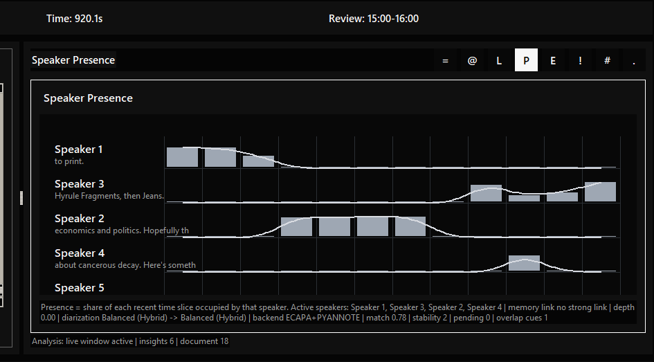
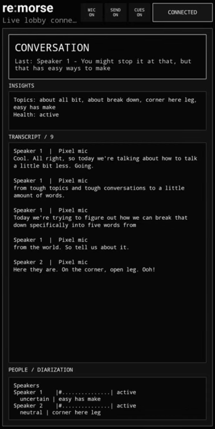
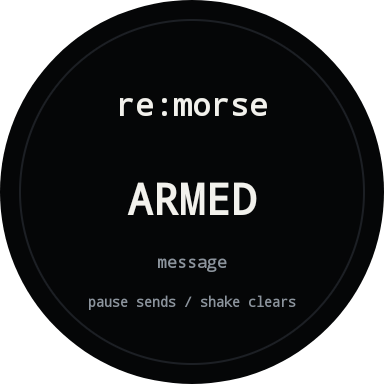

A PRODUCT BY SOCIO / IN DEVELOPMENT
remorse
Follow the conversation as it happens.
I am building remorse to process live speech, track who is speaking, and provide conversational cues through screens and wearable devices.
See the system working ↓INSIDE THE PROTOTYPE
From speech to feedback.
These excerpts focus on individual parts of remorse running during IYKYD conversations. Each loop keeps the original timing and links to its source recording.
Speaker activity, incoming text, and conversation prompts show how the system responds as a session develops.
PROTOTYPE / FIELD RECORDING
Separate the speakers.
Diarization tracks which speaker is talking over time. Here, separate activity traces sit alongside the transcript, making changes in participation visible during a live conversation.
IYKYD source / 12:00 ↗
PROTOTYPE / FIELD RECORDING
Process speech as it arrives.
Incoming words update the live transcript and the on-screen Morse sequence. The view also exposes the microphone source and reported delay, making the path from captured speech to interface output visible.
IYKYD source / 1:28 ↗
MOBILE APP / LIVE SESSION
The conversation on your phone.
The mobile view brings connection status, microphone and cue controls, session insights, and the transcript into one screen. Speaker labels connect each passage to the diarization activity shown below.
This view makes the running session available on the phone alongside the desktop interface and feedback experiments.
Open full screenshot ↗PROTOTYPE / FIELD RECORDING
Turn context into a cue.
The conversation compass places a suggested next step beside the current exchange. This excerpt shows a prompt to leave room for a response or explicitly invite another speaker.
IYKYD source / 3:47 ↗HAPTIC FEEDBACK / LIVE EVENTS
Follow a haptic signal.
The interface switches from a speaker turn to Phone Alert, then records phone haptic signals within the session. This excerpt shows the software side of the feedback path: an event arriving and appearing alongside the conversation. Wearable cues extend that work beyond the screen.
IYKYD source / 3:52 ↗
WEARABLE DEVELOPMENT / 2026
Conversation cues on the wrist.
I am extending remorse to circular watch displays as another interface for conversational feedback. The on-wrist photo documents the prototype's setup screen, including its muted state, hub status, and clear and send controls.
The separate Armed screen shows the message area and guidance for pause-to-send and shake-to-clear interactions.

DEVELOPMENT THROUGH IYKYD
Tested in real conversations.
IYKYD is where I document remorse in use and explore how small cues can support attention and participation. Socio is the company developing the product.
IYKYD recordings ↗- The complete session
- See the transcript, speaker timeline, session statistics, and open questions together. View the full interface
- The wearable experiment
- The follow-up introduction explains adding a watch to the hub and mobile setup. Watch the introduction